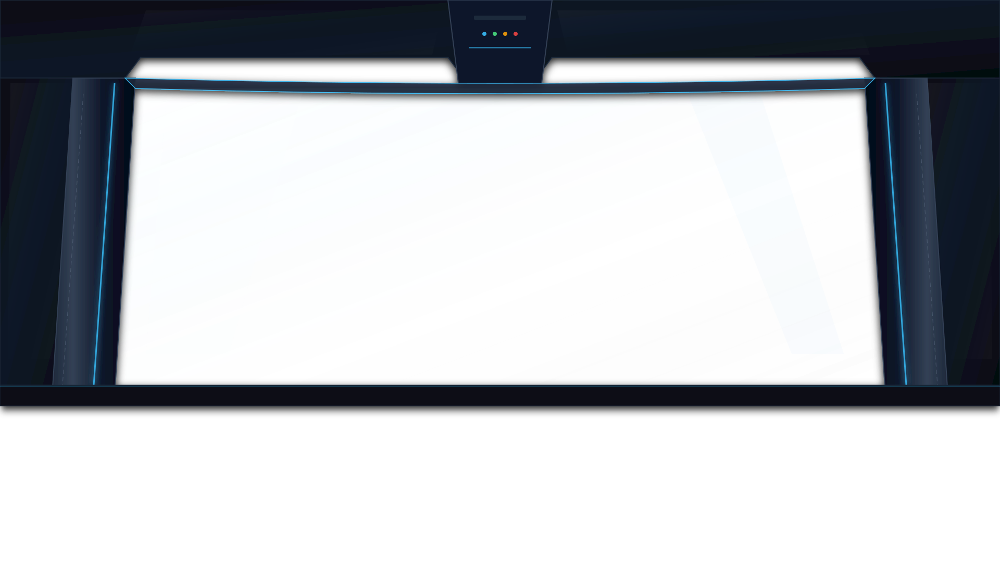
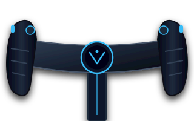
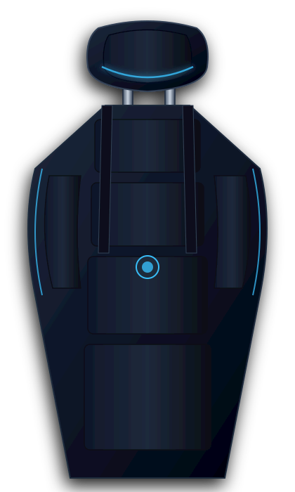
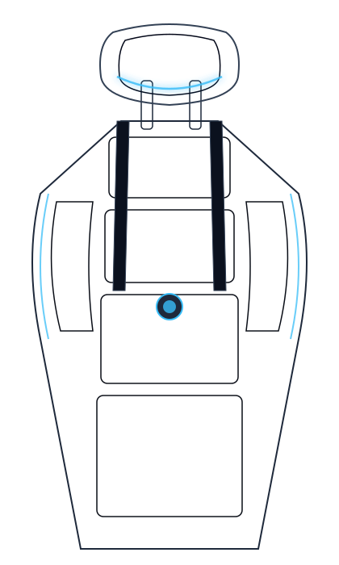

VYOM: Cosmic Odyssey
~ Gamified 3D Space Learning Platform • ISRO • NASA

~ Gamified 3D Space Learning Platform • ISRO • NASA
Analyze real flight specifications and historic achievements from ISRO and NASA. Your selected spacecraft will power your exploration journey through the solar system.
LVM3 (Launch Vehicle Mark-3)
Launch vehicle configuration has been registered to your cadet flight record. The spacecraft is fully fueled, telemetry synchronized, and prepared for Phase 3: Cockpit and Core Scroll Engine!

Provides independent regional satellite-based positioning, navigation and timing (PNT) services for civilian tracking, mobile integration, and disaster alerts across India and 1,500 km surrounding borders.
NavIC operates dual-frequency L5 and S-band civilian signals, giving Indian smartphones superior positioning accuracy in equatorial ionospheric conditions compared to standard single-frequency GPS!
You have navigated LEO Satellites and the Lunar South Pole! Test your knowledge in the Cadet Academy to earn stars, badges, and +250 XP!
Loading astronomical telemetry from NASA Goddard Space Flight Center...
VYOM is an educational interplanetary exploration platform built strictly with authentic, scientifically verified telemetry, cartography, and mission data provided by the world's premier space agencies.
Most web-based space software (NASA Eyes, Solar System Scope, Google Sky) are passive 3D model viewers. Students explore aimlessly for a few minutes and leave without retaining underlying astrophysics or mission engineering. VYOM solves this by transforming solar system exploration into an active, gamified 3D spacecraft piloting journey.
Places the cadet directly inside an enclosed spacecraft cockpit with multi-plane 3D parallax depth, live telemetry (Speed, Distance, Objects), and tactical controls.
Unifies real achievements from both NASA and ISRO—Chandrayaan-3 South Pole, Mangalyaan, and NavIC alongside Apollo 11, Curiosity, and Voyager 1.
Progressive levels, continuous 3D cruising with Web Speech narration, 5-question interactive quizzes, XP, badges, daily streaks, and certified graduation.
Cockpit integrates live daily NASA APOD feeds, NASA Image Archive search, and curated ISRO mission dossiers with instant audio readouts.
Presenting to judges? Use these one-click shortcuts to instantly demonstrate each core phase of the application in seconds:
Interactive astronaut video scrubbing, tactile 3D PUSH ME button, pneumatic visor drop, and pure Web Audio synthesizer.
Selectable vehicle cards (LVM3, PSLV, Saturn V, Falcon 9), fleet agency filter, and cryogenic pre-flight fueling simulation.
Multi-plane parallax with pilot/copilot seats, canopy window frame, live telemetry (Speed, Distance, Timer), and steering flight yoke.
Scroll engine navigates past 200+ rock Asteroid Belt and 16 Psyche with Web Speech API audio narration.
Live NASA APOD image/video telemetry, NASA Image Library search engine, and curated ISRO mission gallery.
Interactive MCQs, Match-the-Pair and Ordering questions with instant scientific explanations, XP rewards, and streaks.
High-resolution official accredited space exploration certificate with printable print-to-PDF formatting.
How VYOM compares to standard space software and existing EdTech tools:
| CAPABILITY | 🌌 VYOM | NASA EYES | DUOLINGO / QUIZLET | YOUTUBE / DOCUMENTARIES |
|---|---|---|---|---|
| Immersive 3D Cockpit Flight | ✅ Yes (Multi-plane parallax) | ❌ No (Third-person viewer) | ❌ No (2D flashcards) | ❌ Passive video |
| NASA + ISRO Synergy | ✅ Yes (Chandrayaan + Apollo) | ❌ NASA Only | ❌ Rare / Generic | ⚠️ Fragmented |
| Gamified Space Academy & Quizzes | ✅ Yes (5 Mechanics + XP) | ❌ No assessments | ✅ Text quizzes only | ❌ No |
| Live Telemetry (NASA APOD) | ✅ Built into Cockpit MFD | ❌ No | ❌ No | ❌ No |
| Zero-Audio-File Synthesizer | ✅ Pure Web Audio API | ❌ Pre-recorded audio | ❌ Stock sounds | ⚠️ Video track |
| Offline & Low-Bandwidth Resilience | ✅ 100% Caching + Eco Mode | ❌ Requires 100MB+ | ⚠️ Partial | ❌ High data streaming |
Roadmap for scaling VYOM into schools, colleges, and global space education:
Dedicated portal for educators to assign solar system flight sectors as homework, track student quiz scores in real-time, and align modules with CBSE, ICSE, and NGSS curricula.
Live countdown tickers and telemetry feeds for upcoming launches: ISRO Gaganyaan crewed spaceflight, Chandrayaan-4 sample return, NASA Artemis II, and Europa Clipper.
Expand Web Speech API voice synthesis to support Indian regional languages: Hindi (हिंदी), Tamil (தமிழ்), Telugu (తెలుగు), Kannada, and Bengali, democratizing space learning for rural schools.
One-click WebXR integration allowing cadets to spawn 1:1 scale AR models of Chandrayaan-3 Vikram lander, Pragyan rover, or Perseverance rover right on their living room or classroom desk.
Expand flight corridor beyond Neptune to the Oort Cloud, Alpha Centauri, habitable exoplanets (TRAPPIST-1e, Proxima b), and James Webb Deep Field galaxies.
Space squads for schools where classrooms compete weekly in astrophysics challenges, earning shared XP to launch collaborative virtual orbital stations.
Engineered for lightweight, zero-dependency, ultra-fast cross-platform execution:
Powers the 3D celestial cosmos, 4,000 multi-spectral stars, planet shaders, and interactive 3D satellite mesh raycasting.
Custom vertex & fragment shader materials simulating Rayleigh scattering and Fresnel rim glow for Earth, Venus, and Neptune.
Zero external MP3 audio file dependencies. Synthesizes pneumatic visor locks, rocket thrust roar, and 55Hz binaural cabin hums natively in code.
Native client-side speech synthesis providing vocal scientific narration for celestial encounters and NASA transmissions with subtitle sync.
Procedurally renders 2048x1024 Blue Marble oceans, continents, craters, and Jovian storm bands on demand with zero download weight.
Direct integration with api.nasa.gov APOD and images-api.nasa.gov search engine with resilient LocalStorage caching.



The scientific instruments designed by ISRO research laboratories carried out groundbreaking in-situ experiments on the lunar south pole regolith and atmosphere.
In September 2019, Chandrayaan-2's Vikram lander lost control in the final 2.1 km above the Moon. An attitude control software bottleneck could not compensate for accumulated errors in velocity during the braking phase.
Under ISRO Chairman S. Somanath, the team adopted a revolutionary "Failure-Based Design Philosophy": instead of asking what should go right, they analyzed every possible thing that could go wrong and engineered redundancies.
"We learned that failure is not an end, but the greatest teacher in interplanetary exploration." — ISRO
Exchange scientific Mission Credits earned by returning field samples to upgrade your spacesuit and exploration rover.
Learn how real robotic explorers from world space agencies paved the way for human boots on the Red Planet.
Indigenously developed by leading Indian research institutes (IIA, IUCAA, ISAC/URSC, PRL, VSSC, LEOS) to perform multi-wavelength solar physics from L1.
In 1772, mathematician Joseph-Louis Lagrange discovered that in a system of two large bodies in orbit (like the Sun and Earth), there are five equilibrium points where gravitational pull and centrifugal force balance out.
"Stationed at the Sun's doorstep, Aditya-L1 serves as humanity's early warning space sentinel." — ISRO